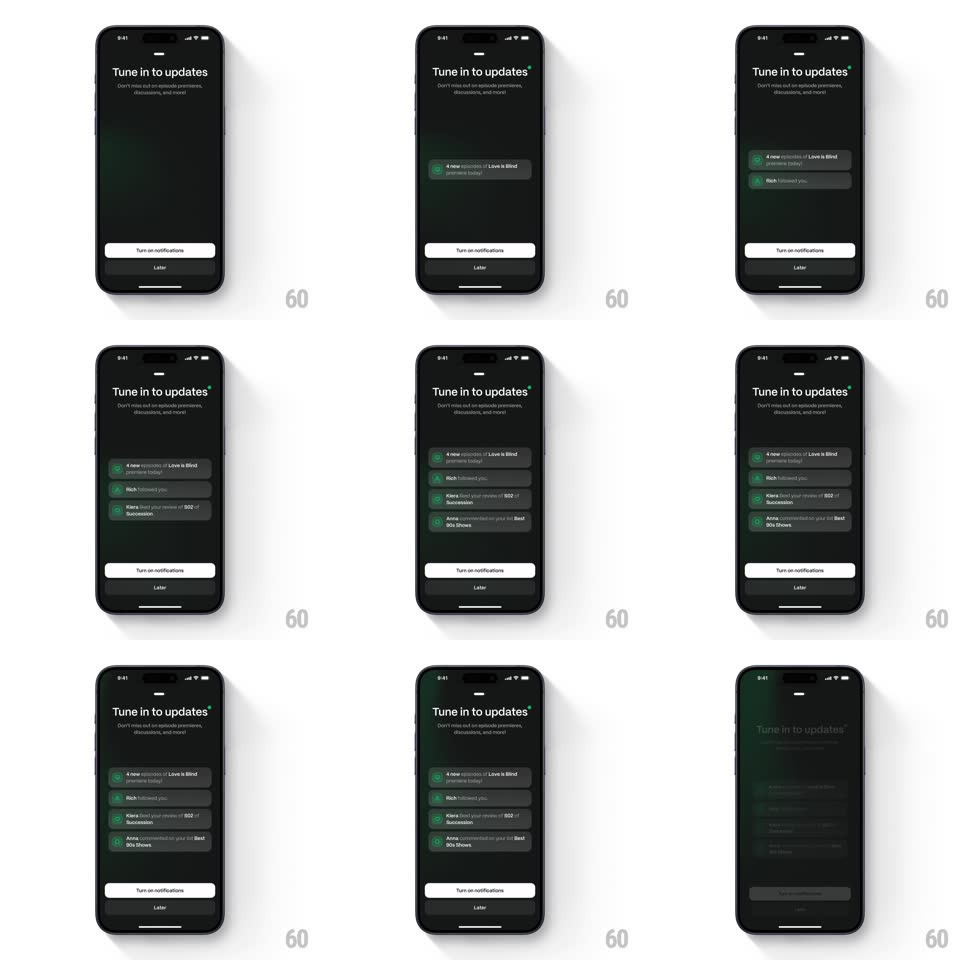

Media
Frame-by-frame

Rebuild this interaction 1:1: Marathon's notifications onboarding - on the dark "Tune in to updates" screen, simulated notification banners drop in one by one with springy staggered timing ("4 new episodes of Love is Blind", "Rich followed you", "Kiera liked your review of S02 of Succession"), stacking into a list to preview what turning on alerts gets you.

Rebuild this interaction 1:1: Marathon's notifications onboarding - on the dark "Tune in to updates" screen, simulated notification banners drop in one by one with springy staggered timing ("4 new episodes of Love is Blind", "Rich followed you", "Kiera liked your review of S02 of Succession"), stacking into a list to preview what turning on alerts gets you.
## Integration
Integration: stack-agnostic spec - springs given as stiffness/damping, timed motions as duration + curve; map every value to your framework and animation library of choice.
## Scene
Dark screen: "Tune in to updates" headline with subline, white "Turn on notifications" button and a "Later" text button at the bottom. The middle fills with dark notification cards - show icon, bold update line, grey context line.
## Motion spec
Pattern: staggered notification preview drop-in.
- Each banner enters from the top edge of its slot (translateY -24px -> 0 with spring ~300/20, a soft overshoot, 500ms) fading in over the first 150ms.
- Banners arrive one at a time, ~700ms apart, stacking downward - each new arrival nudges the existing stack down (layout spring ~340/26).
- After the last banner lands, the whole stack does a gentle settle (translateY -2px -> 0, 200ms) and holds.
- A light haptic tick accompanies each banner's landing.
- The sequence loops if the screen sits idle: banners fade out together (300ms) and replay after a 2s pause.
## Calibration
- The stagger is irregular (700ms, then 900ms, then 600ms) - real notifications don't arrive on a metronome.
- The overshoot is small and single - springy, not bouncy.
## Reduced motion
Banners fade in stacked, staggered 150ms, no spring.
## Don't miss
- Each banner's show icon is a rounded square with the show's color - not generic bell icons.
- "Later" is a bare text button under the primary - easy to miss by design, but present.